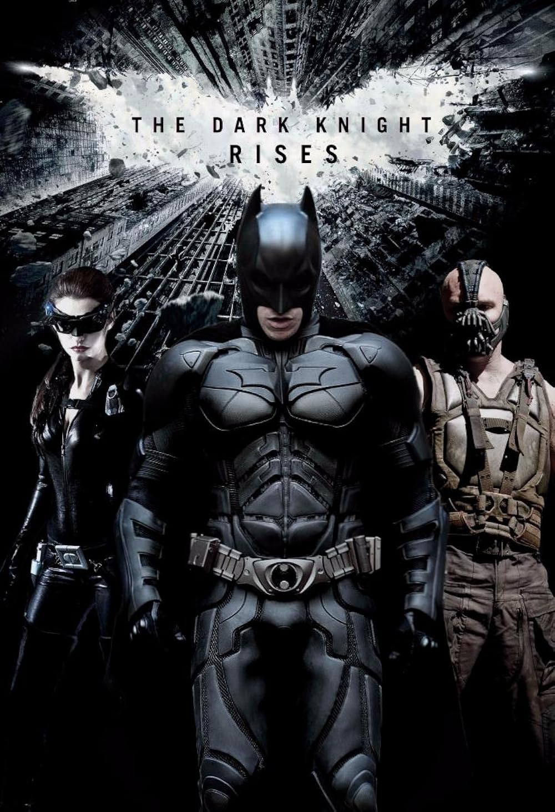

Batman (Bruce Wayne)

Batman, also known as Bruce Wayne, is a fictional character from the movie The Dark Knight Rises. He is a billionaire vigilante who fights crime in Gotham City. One of the most inspiring scenes is when he is in the well and keeps failing to make the final leap to climb up and defeat Bane.
- He represents resilience and determination, never giving up despite numerous setbacks.
- Batman's journey showcases the importance of facing one's fears and overcoming them.
- His dedication to justice and protecting the innocent serves as a powerful example of heroism.